건축산업기사 (2014-03-02 기출문제)
1과목: 건축계획
1. 학교건축에서 단층교사의 이점이 아닌 것은?
- 재해시 피난이 용이하다.
- 채광 및 환기에 유리하다.
- 학습활동을 실외에 연장할 수가 있다.
- 전기, 급배수, 난방 등을 위한 배선ㆍ배관의 집약이 용이하다.
(정답률: 82%)

2. 주택의 부엌에서 작업삼각형(Work Triangle)의 구성요소에 속하지 않는 것은?
- 냉장고
- 배선대
- 개수대
- 레인지
(정답률: 86%)
3. 공장건축의 레이아웃(layout) 계획에 관한 설명으로 옳지 않은 것은?
- 고정식 레이아웃은 조선소와 같이 제품이 크고 수량이 적은 경우에 행해진다.
- 레이아웃은 공장규모의 변화에 대응할 수 있도록 층분한 융통성을 부여하여야 한다.
- 공장건축에 있어서 이용자의 심리적인 요구를 고려하여 내부 환경을 결정하는 것을 의미한다.
- 작업장내의 기계설비, 작업자의 작업구역, 자재나 제품 두는 곳 등에 대한 상호관계의 검토가 필요하다.
(정답률: 83%)
4. 공동주택의 관한 설명으로 옳지 않은 것은?
- 단독주택보다 독립성이 크다.
- 주거환경의 질 을 높일 수 있다.
- 도시샘활의 커뮤니티화가 가능하다.
- 동일한 규모의 단독주택보다 대지비나 건축비가 적게 든다.
(정답률: 85%)
5. 계단실형인 공동주택의 계단실에 관한 설명으로 옳지 않은 것은?
- 계단실의 각 층별로 층수를 표시한다.
- 계단실 최상부에는 개구부를 설치하지 않는다.
- 계단실의 벽 및 반자의 마감은 불연재료 또는 준불연재료로 한다.
- 계단실에 면하는 각 세대의 현관문은 계단의 통행에 지장이 되지 않도록 한다.
(정답률: 81%)
6. 다음 설명에 알맞은 사무소 건축의 복도형식은?
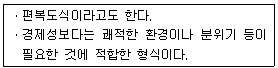
- 단일지역배치
- 2중지역배치
- 3중지역배치
- 4중지역배치
(정답률: 79%)
7. 사무실 건축의 엘리베이터 배치시 고려사항으로 옳지 않은 것은?
- 4대 이상 설치 시에는 일렬 배치로 한다.
- 교통동선의 중심에 설치하여 보행거리가 짧도록 배치한다.
- 여러 대의 엘리베이터를 설치하는 경우, 그룹별 배치와 군 관리 운전방식으로 한다.
- 엘리베이터 홀은 엘리베이터 정원 합계의 50% 정도를 수용할 수 있어야 하며, 1인당 점유면적은 0.5~0.8m2로 계산한다.
(정답률: 71%)
8. 다음 중 근린주구 생활권의 주택지의 단위로서 규모가 가장 작은 것은?
- 인보구
- 근린주구
- 근린지구
- 근린분구
(정답률: 90%)
9. 다음 설명에 알맞은 학교운영방식은?
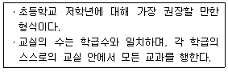
- 달톤형
- 플래툰형
- 종합교실형
- 교과교실형
(정답률: 89%)
10. 고리형이라고도 하며 통과교통은 없으나 사람과 차량의 동선이 교차된다는 문제점이 있는 중택단지의 접근도로 유형은?
- T자형
- 루프형(Loop)
- 격자형(Grid)
- 막다른 도로형(Cul-de-sac)
(정답률: 73%)
11. 사무소 건축의 실 단위계획 중 개방식 배치에 관한 설명으로 옳지 않은 것은?
- 모든 면적을 유용하게 이용할 수 있다.
- 공간의 길이나 깊이에 변화를 줄 수 없다.
- 기본적인 자연채광에 인공조명이 요구된다.
- 소음이 많이 발생하고 개인의 독립성이 결핍된다는 단점이 있다.
(정답률: 70%)
12. 주택의 동선계획에 관한 설명으로 옳지 않은 것은?
- 개인, 사회, 가사노동권의 3개 동선은 서로 분리하는 것이 좋다.
- 동선상 교통량이 많은 공간은 서로 인접 배치하는 것이 좋다.
- 거실은 주택의 중심으로 모든 동선이 교차, 관통하도록 계획하는 것이 좋다.
- 화장실, 현관 등과 같이 사용빈도가 높은 공간은 동선을 짧게 처리하는 것이 좋다.
(정답률: 78%)
13. 다음 중 상점 쇼윈도의 눈부심(glare)을 방지하기 위한 방법과 가장 거리가 먼 것은?
- 쇼윈도 형태를 만입형으로 계획한다.
- 실내와 실외의 온도 차이를 최소화한다.
- 캐노피를 설치하여 쇼윈도 외부에 그늘을 만든다.
- 쇼윈도를 경사지게 하거나 특수한 경우 곡면유리로 처리한다.
(정답률: 75%)
14. 사무소 건축의 화장실 위치에 관한 설명으로 옳지 않은 것은?
- 각 사무실에서 동선이 간단할 것
- 각 층마다 공통의 위치에 배치할 것
- 계단실, 엘리베이터 홀에 근접할 것
- 가능하면 외기에 접하지 않는 위치로 할 것
(정답률: 83%)
15. 생리적인 면을 고려한 6세 이상의 아동 2인용 침실의 면적으로 적당한 것은? (단, 6세 이상 아동 1인의 소요공기랑은 25m3/h, 자연환기횟수는 2회/h, 천장높이는 2.5m이다.)
- 10m2
- 15m2
- 20m2
- 25m2
(정답률: 48%)
16. 학교운영방식 중 플래툰형에 관한 설명으로 옳은 것은?
- 모든 교실이 특정교과를 위해 만들어지고 일반교실은 없다.
- 전학급을 양분화하여 한 쪽이 일반교실을 사용할 때 다른 편은 특별교실을 사용한다.
- 학급과 학년을 없애고 학생들은 각자의 능력에 따라서 교과 선택을 한다.
- 교실의 수는 학급수와 일치하며, 각 학급은 스스로의 교실 안에서 모든 교과를 행한다.
(정답률: 67%)
17. 상점의 판매방식에 대한 설명을 옳지 않은 것은?
- 대면판매방식은 측면판매방식에 비해 상품의 진열면적이 감소된다.
- 측면판매방식에서 고객은 상품을 직접 만지고 고를 수 있으므로 선택이 용이하다.
- 측면판매방식에서 판매원은 쇼 케이스를 중심으로 고정된 자리나 위치를 명확히 확보할 수 있다.
- 대면판매방식에서 상품의 쇼 케이스가 중앙에 많이 배치되면 상점의 분위기가 다소 혼란해질 수 있다.
(정답률: 83%)
18. 공장건축의 형식 중 파빌리언(pavilion type)에 관한 설명으로 옳지 않은 것은?
- 통풍 및 채광이 유리하다.
- 공장의 확장이 거의 불가능하다.
- 각 동의 건설을 병행할 수 있으므로 조기완성이 가능하다.
- 각각의 건물에 대해 건축형식 및 구조를 각기 다르게 할 수 있다.
(정답률: 77%)
19. 백화점 매장의 배치유형 중 직각배치형에 관한 설명으로 옳지 않은 것은?
- 판매대의 설치가 간단하고 경제적이다.
- 판매장 면적을 최대한을 이용할 수 있다.
- 매장의 획일성에서 탈피하여 자유로운 구성이 용이하다.
- 고객의 통행량에 따라 부분적으로 통로 폭을 조절하기 어럽다.
(정답률: 75%)
20. 상점의 매장 및 파사드 구성에 요구되는 AIDMA 법칙에 속하지 않는 것은?
- Design
- Action
- Memory
- Attention
(정답률: 80%)
2과목: 건축시공
21. 로이유리(Low Emissivity)에 대한 설명으로 옳지 않은 것은?
- 판유리를 사용하여 한 쪽 면에 얇은 은막을 코팅한 유리이다.
- 가시광선을 76% 넘게 투과시켜 자연채광을 극대화시켜 밝은 실내분위기를 유지할 수 있다.
- 파괴 시 파편이 없어 안전하여 고층건물의 창, 테두리 없는 유리문에 많이 쓰인다.
- 겨울철에 건물 내에 발생하는 장파장의 열선을 실내로 재반사시켜 실내보온성이 뛰어나다.
(정답률: 78%)
22. 목공사에서 건축연면적(m2)당 먹매김의 품이 가장 많이 소요되는 건축물은?
- 고급주택
- 학교
- 사무소
- 은행
(정답률: 81%)
23. 시공줄눈 설치이유 및 설치위치로 잘못된 것은?
- 시공줄눈의 설치 이유는 거푸.집의 반목사용을 위해 설치한다.
- 시공줄눈의 설치위치는 이음길이가 최대인 곳에 둔다.
- 시공줄눈의 설치위치는 구조를 강도상 영항이 적은 곳에 설치한다
- 시공줄눈의 설치위치는 압축력과 직각방항으로 한다.
(정답률: 62%)
24. 블록쌓기 시 주의사항으로 옳지 않은 것은?
- 블록의 모르타르 접착면은 적당히 물 축이기를 한다.
- 블록은 실두께가 두꺼운 편이 아래로 향하게 쌓는다.
- 보강 블록쌓기일 경우 철근위치를 정확히 유지시키고, 세로근은 이음을 하지 않는 것을 원칙으로 한다.
- 기초 또는 바닥판 윗면은 깨꿋이 청소하고 층분히 물을 축인다.
(정답률: 68%)
25. 관리 사이클의 단계를 바르게 나열한 것은?
- Plan - Check - Do - Action
- Plan - Do - Check - Action
- Plan - Do - Action - Check
- Plan - Action - Do - Check
(정답률: 67%)
26. 어스엥커식 흙막이 공법에 관한 기술로 옳은 것은?
- 굴착단면을 토질의 안정구배에 따른 사면(料面)으로 실시하는 공법
- 굴착외주에 흙막이 벽을 설치하고 토압을 흙막이벽의 버팀대에 부담하고 굴착하는 공법
- 흙막이벽의 배면 흙속에 고강도 강재를 사용하여 보링공 내에 모르타르재와 함께 시공하는 방법
- 통나무를 1.5~2m 간격으로 박고 그 사이에 널을 대고 흙막이를 하는 공법
(정답률: 67%)
27. 목공사에 관한 설명 중 옳지 않은 것은?
- 이음과 맞춤의 단면은 응력의 방향과 일치시킨다.
- 맞춤면은 정확히 가공하여 상호간 밀착하고 빈틈이 없도록 한다.
- 못의 길이는 널두께의 2.5~3배 정도로 한다.
- 이음과 맞춤은 응력이 작은 곳에 만드는 것이 좋다.
(정답률: 58%)
28. 벽돌쌓기에서 방수 하자 발성과 관련하여 가장 주의를 요하는 부분은?
- 창대쌓기
- 모서리쌓기
- 벽쌓기
- 기초쌓기
(정답률: 60%)
29. 실내 마감용 대리석 붙이기에 사용되는 재료로서 가장 적합한 것은?
- 석고 모르타르
- 방수 모르타르
- 회반죽
- 시멘트 모르타르
(정답률: 60%)
30. 목구조의 따낸 이음 중 휨에 가장 효과적인 이음은?
- 주먹장 이음
- 메뚜기장 이음
- 엇걸이 이음
- 반턱 이음
(정답률: 62%)
31. 연악한 점토지반의 전단강도를 결정하는데 가장 보편적으로 사용되는 현장시험 방법은?
- 표준관입시험(Penetration test)
- 딘월 샘플링(Thin wall sampling)
- 웰 포인트 시 (Well point test)
- 베인 테스트(Vane test)
(정답률: 75%)
32. 콘크리트 비빔용수의 적합한 품질(상수돗물 이외의 물의 품질)기준으로 옳지 않은 것은?
- 현 탁 물질의 양이 1g/L 이하
- 염소이온랑이 250mg/L 이하
- 시멘트 응결 시간의 차가 초결은 30분 이내, 종결은 60분 이내
- 모르타르의 압축강도비가 재령 7일 및 재령 28일에서 90% 이상
(정답률: 50%)
33. 평지붕 방수공사의 재료로서 사용되지 않는 것은?
- 블로운 아스팔트
- 아스팔트 컴파운드
- 아스팔트 루핑
- 스트레이트 아스팔트
(정답률: 61%)
34. 콘크리트 진동다짐에 대한 설명 중 옳지 않은 것은?
- 봉형 바이브레이터는 콘크리트 내부에 넣어 진동을 통해 다짐을 한다.
- 폼 바이브레이터는 거푸집면에 대고 진동을 주어 다짐을 한다.
- 콘크리트에 삽입하는 바이브레이터의 경우 진동을 주는 시간은 1개소 당 10~15초가 적당하다.
- 바이브레이터를 콘크리트에 삽입할 때 바이브레이터의 선단은 철근, 철물 등에 닿게 하여 진동을 골고루 주도록 한다.
(정답률: 73%)
35. 건설기계 중 지반다짐기계가 아닌 것은?
- 텐덤 롤러 (tandem roller)
- 소일 콤팩터 (soil compactor)
- 램머(rammer)
- 글램쉘(clamchell)
(정답률: 73%)
36. 지붕공사 시 사용되는 금속판에 대한 설명으로 옳지 않은 것은?
- 금속판지붕은 다른 재료에 비해 가볍고, 시공이 쉬운 편이다.
- 급경사의 지붕이나 뾰족탑 등에는 사용이 어럽다.
- 열전도가 크고 온도변화에 의한 신축이 크다.
- 금속판의 종류에는 아연판, 동판, 알루미늄판 등이 있다.
(정답률: 60%)
37. 왕대공 지붕틀의 ㅅ자보 계산에 고려해야 하는 힘의 조합으로 옳은 것은?
- 인장력과 압축력
- 휨모멘트와 인장력
- 휨모멘트와 압축력
- 인장력과 전단력
(정답률: 51%)
38. 건설공사에서 입찰과 계약에 관한 사항으로 옳지 않은 것은?
- 공개경쟁 입찰은 공사가 조약해질 염려가 있다.
- 지명입찰은 시공상 신뢰성이 적다.
- 지명입찰은 낙찰자가 소수로 한정되어 담합과 같은 폐해가 발생하기 쉽다.
- 특명입찰은 단일 수급자를 선정하여 발주하는 것을 말한다.
(정답률: 76%)
39. PERT/CPM 기법의 장점으로 옳지 않은 것은?
- 공사 착수 전 문제점을 예측할 수 있다.
- 공정표의 작성 및 관리가 용이하다.
- 공정정보(공기, 원가, 노무, 자재 등)의 의사소통이 명확하다.
- 최저의 비용으로 공기단축이 가능한 단위공정을 추정하기 용이하다.
(정답률: 59%)
40. 미장공사 중 시멘트 모르타르 미장에 관한 설명으로 옳지 않은 것은?
- 미장바르기 순서는 보통 위에서부터 아래로 하는 것을 원칙으로 한다.
- 초벌바름 후 2주일 이상 방치하여 바름면 또는 라스의 이음매 등에서 균열을 충분히 발생시킨다.
- 초벌바름 후 표면을 매끈하게 하여 재벌바름 시 접착력이 좋아지도록 한다.
- 정벌바름은 공사의 조건에 따라 색조, 촉감을 결정하여 순마감재료를 사용하거나 혼합물을 첨가하여 바른다.
(정답률: 49%)
3과목: 건축구조
41. 다음은 옹벽 구조물 설계에 있어서 활동 및 전도에 대한 안정조건이다. ( ) 안에 들어갈 수치를 순서대로 옳게 나열한 것은?
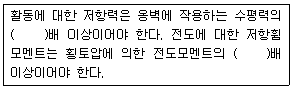
- 1.5, 2.0
- 2.0, 1.5
- 1.2, 2.4
- 2.4, 1.2
(정답률: 51%)
42. 다음 각 슬래브에 대한 설명으로 옳지 않은 것은?
- 슬래브의 두께가 구조제한 조건에 따르지 않을 경우 슬래브 처짐과 진동의 문제가 발생할 수 있다.
- 플랫슬래브는 보가 없으므로 천장고를 낮추기 위한 방법으로도 사용된다.
- 위프슬래브는 일종의 격자시스템 슬래브 구조이다.
- 장선슬래브는 2방향으로 하중이 전달되는 슬래브이다.
(정답률: 59%)
43. 강도설계법에서 단철근 직사각형보의 등가응력 깊이 a를 구하면? (단, fy = 300MPa, fck = 21MPa)
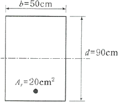
- 52.6mm
- 67.2mm
- 75.9mm
- 82.5mm
(정답률: 59%)
44. 그림과 같은 부정정 보의 B점 에서의 반력 RB를 구하면?(오류 신고가 접수된 문제입니다. 반드시 정답과 해설을 확인하시기 바랍니다.)
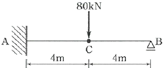
- 25kN
- 35kN
- 40kN
- 45kN
(정답률: 30%)
45. 그림과 같은 철근콘크리트기둥에서 띠철근의 수직간격으로 옳은 것은?
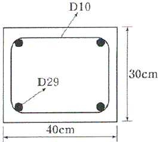
- 30cm 이하
- 32cm 이하
- 46cm 이하
- 48cm 이하
(정답률: 59%)
46. 그림과 같은 보의 단부(A점)와 중앙부(C점)에서의 휨모멘트 비율 MA : MC는?
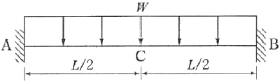
- 1 : 1
- 1 : 2
- 2 : 1
- 1 : 3
(정답률: 46%)
47. 압축을 받는 D22 이형철근의 기본정착길이를 구하면? (단, 경량콘크리트계수 = 1, fck = 25MPa, fy = 400MPa)
- 378.4mm
- 440mm
- 500.3mm
- 520mm
(정답률: 65%)
48. 다음 그림은 단순보의 임의 점에 집중 하중 1개가 작용하었을 때의 전단력도를 나타낸 것이다. C점의 휨모멘트는 얼마인가?
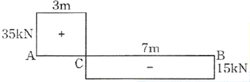
- 0kNㆍm
- 1⑤kNㆍm
- 210kNㆍm
- 245kNㆍm
(정답률: 52%)
49. 강도설계법에 의한 철근콘크리트 설계에서 보의 휨 강도 산정시 기본 가정으로 옳지 않은 것은?
- 철근과 콘크리트의 변형률은 중립축으로부터의 거리에 비례한다.
- 휨강도 계산시 콘르리트의 인장강도를 고려한다.
- 콘크리트 변형률과 압축응력의 분포 관계는 직사각형, 사다리꼴, 포물선형 등으로 가정할 수 있다.
- 콘크리트의 압축연단에서의 극한변형률은 0.003이다.
(정답률: 43%)
50. 강도설계법에 의한 철근콘크리트 설계 시 강도감소계수 값으로 옳지 않은 것은?
- 인장지배단면 : 0.85
- 전단력 및 비틀림 모멘트 : 0.75
- 압축지배단면(띠철근 기둥) : 0.70
- 변화구간 단면 : 0.65~0.85
(정답률: 59%)
51. 그림과 같은 단순보에서 A점의 수직반력은?
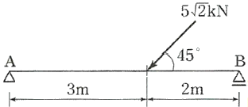
- 2kN
- 3kN
- 4kN
- 5kN
(정답률: 45%)
52. 압축부재의 유효좌굴길이는 무엇으로 결정되는가?
- 부재단면의 단면2차모멘트
- 부재단면의 단면계수
- 재단의 지지조건
- 부재의 처짐
(정답률: 45%)
53. 그림과 같은 아치구조물에서 A점의 수평 반력은?
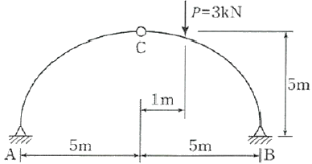
- 1.2kN
- 1.5kN
- 1.8kN
- 2.0kN
(정답률: 33%)
54. 다음 구조물의 부정정 차수는?
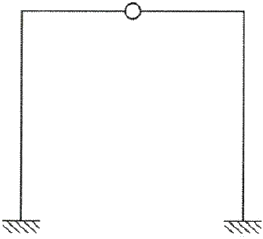
- 1차 부정정
- 2차 부정정
- 3차 부정정
- 4차 부정정
(정답률: 65%)
55. 철근콘크리트 구조로도 이용되는 H. P쉘(hyperbolic paraboloid shell)에 관한 설명으로 옳지 않은 것은?
- H.P곡면을 몇 개의 단위로 짜 맞추면 여러 종류의 지붕형태를 구성할 수 있다.
- 쌍곡포물선면으로 된 쉘이다.
- 면내 전달력에 의하여 하중을 주변 지지체에 전달할 수 있다.
- 면내에는 인장력이 발생하지 않는다.
(정답률: 58%)
56. 그림과 같은 삼각형의 밑변을 지나는 X축에 대한 단면2차 모멘트는?
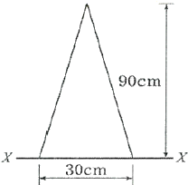
- 607500cm4
- 1215000cm4
- 18 22500cm4
- 3645000cm4
(정답률: 56%)
57. 강도설계법에서 보통콘크리트와 설계기준항복강도 400MPa 철근을 사용한 양단 연속 1방향 슬래브의 스팬이 4.2m일 때 처짐을 계산하지 않는 경우의 슬래브 최소 두께로 옳은 것은?
- 12cm
- 13cm
- 14cm
- 15cm
(정답률: 52%)
58. 허용압축응력이 6MPa인 정사각형 소나무기둥이 60kN의 압축력을 받는 경우 한 변의 길이는 최소 얼마 이상으로 해야 하는가?
- 10cm
- 15cm
- 100cm
- 150cm
(정답률: 39%)
59. 강도설계법에서 고정하중 D와 적재하중 L의 소요강도에 대한 하중조합으로 옳은 것은?
- U = 1.2D+1.6L
- U = 1.8D+1.4L
- U = 0.75(1.2D+1.6D)
- U = 0.75(1.7D+1.4)
(정답률: 63%)
60. 그림과 같은 구조물에서 A점의 휨모멘트는?
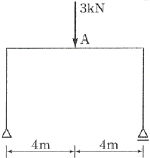
- 3kNㆍm
- 4kNㆍm
- 5kNㆍm
- 6kNㆍm
(정답률: 47%)
4과목: 건축설비
61. 옥내소화전설비에 관한 설명으로 옳은 것은?
- 송수구는 지면으로부터 높이가 0.5m 이상 1m 미만의 위치에 설치한다.
- 옥내소화전 노즐선단의 방수압력은 0.1MPa 이상이어야 한다.
- 옥내소화전용 펌프의 토출량은 옥내소화전이 가장 많이 설치된 층의 설치개수에 100L/min를 곱한 양 이상이어야 한다.
- 수원은 그 저수량이 옥내소화전의 설치개수가 가장 많은 층의 설치개수에 1.3m3를 곱한 양 이상이 되도록 하여야 한다.
(정답률: 59%)
62. 옥내의 습기가 많은 노출장소에서 시설이 가능한 배선 공사는?
- 금속관 공사
- 금속몰드 공사
- 금속덕트 공사
- 플로어덕트 공사
(정답률: 58%)
63. 다음과 같이 정의되는 전기설비 관련 용어는?
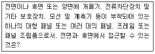
- 캐비닛
- 배전반
- 분전반
- 차단기
(정답률: 65%)
64. 온수난방에 관한 설명으로 옳지 않은 것은?
- 강제 순환식은 중력 순환식보다 관경이 작아도 된다.
- 중력 순환식 온수난방에서는 방열기는 보일러보다 높은 장소에 설치한다.
- 고온수 방식에서는 개방식 팽창탱크를 사용하며 밀폐식 팽창탱크는 사용할 수 없다.
- 단관식 배관방식은 온수의 공급과 환수를 하나의 관으로 사용하는 방식이다.
(정답률: 57%)
65. 35℃의 옥외공기 30kg과 27℃의 실내공기 70kg을 단열혼합 하었을 때 혼합공기의 온도는?
- 28.20℃
- 29.40℃
- 30.60℃
- 32.60℃
(정답률: 65%)
66. 펌프의 회전수가 100rpm에서 전양정이 40m인 펌프가 었다. 회전수를 50rpm으로 감소시켰을 때 전양정은?
- 10m
- 20m
- 40m
- 80m
(정답률: 51%)
67. 피뢰설비의 수뢰부시스템 설치시 사용되는 보호범위 산정방식에 속하지 않는 것은?
- 메시법
- 보호각법
- 전위강하법
- 회전구체법
(정답률: 48%)
68. 공기조화방식 중 전공기 방식에 관한 설명으로 옳지 않은 것은?
- 팬코일 유닛 방식 등이 있다.
- 중간기에 외기 냉방이 가능하다.
- 송풍랑이 많아서 실내공기의 오염이 적다.
- 대형 덕트로 인한 덕트 스페이스가 요구된다.
(정답률: 62%)
69. 환기방식에 관한 설명으로 옳지 않은 것은?
- 기계환기는 환기용량의 제어가 가능하다.
- 자연환기는 외기의 풍속, 풍향 및 온도에 의해 영향을 받는다.
- 강제급기와 자연배기의 조합은 화장실, 욕조 등의 환기에 주로 사용된다.
- 자연환기에서는 건물의 외벽체에 설치된 급기구와 배기구의 기능이 바뀔 수 있다.
(정답률: 60%)
70. 가스 사용시설의 지상배관은 어떤 색으로 도색하는 것이 원칙인가?
- 백색
- 황색
- 적색
- 청색
(정답률: 70%)
71. 아네모스탯형 취출구에 관한 설명으로 옳지 않은 것은?
- 전장 취출구로 많이 사용된다.
- 확산반경이 크고 도달거리가 짧다.
- 몇 개의 콘(cone)이 있어서 1차 공기에 의한 2차 공기의 유인성능이 좋다.
- 라인형 취출구의 일종으로 선의 개념을 통하여 인테리어 디자인에서 미적인 감각을 살릴 수 있다.
(정답률: 60%)
72. 자동화재 탐지설비의 감지기 중 설치된 감지기의 주변온도가 일정한 온도상승률 이상으로 되었을 경우에 작동하는 것은?
- 차동식
- 정온식
- 광전식
- 이온화식
(정답률: 58%)
73. 대변기의 세정방식에 관한 설명으로 옳지 않은 것은?
- 플러시 밸브식은 로 탱크식에 비해 화장실 내를 넓게 사용할 수 있다는 장점이 있다.
- 로 탱크식은 탱크로의 급수압력에 관계없이 대변기로의 공급수량이나 압력이 일정하다.
- 하이 탱크식은 낙차에 의해 대변기를 세척하는 방식으로 연속사용이 가능하다는 장점이 있다.
- 플러시 밸브식은 소음이 크고 량의 물이 필요하기 때문에 일반 가정용으로는 사용이 곤란하다.
(정답률: 54%)
74. 급수방식 중 고가탱크방식에 관한 설명으로 옳지 않은 것은?
- 급수압력이 일정하다.
- 물탱크에서 물이 오염될 가능성이 있다.
- 일반적을 상향급수 배관방식이 사용된다.
- 단수시에도 일정량의 급수를 계속할 수 있다.
(정답률: 68%)
75. 역류를 방지하여 오염으로부터 상수계통을 보호하기 위한 방법으로 옳지 않은 것은?
- 토수구 공간을 둔다.
- 역류방지 밸브를 설치한다.
- 배관은 크로스 커넥션이 되도록 한다.
- 대기압식 또는 가압식 진공브레이커를 설치한다.
(정답률: 67%)
76. 배수용 트랩에 속하지 않는 것은?
- 관 트랩
- 벨 트랩
- 드럼 트랩
- 벨로우즈 트랩
(정답률: 57%)
77. 다음 중 변전실의 높이 결정 시 고려할 사항과 가장 관계가 먼 것은?
- 천장 배선방법
- 실내 환기방법
- 바닥 트렌치 설치 여부
- 실내에 설치되는 기기의 최고 높이
(정답률: 57%)
78. 다음 중 습공기를 가열하였을 경우 증가하지 않는 것은?
- 엔탈피
- 비체적
- 건구온도
- 상대습도
(정답률: 54%)
79. 통기관의 설치목적과 가장 관계가 먼 것은?
- 배수의 흐름을 원활히 한다.
- 배수관 내의 환기를 도모한다.
- 사이폰 작용에 의한 봉수 파괴를 방지한다.
- 모세관 현상에 의한 봉수 파괴를 방지한다.
(정답률: 57%)
80. 중앙식 급탕방식 중 간접가열식에 관한 설명으로 옳지 않은 것은?
- 가열보일러는 난방용 보일러와 겸용할 수 있다.
- 직접가열식에 비해 가열보일러의 열효율이 낮다.
- 가열보일러는 중압 또는 고압 보일러를 사용해야 한다.
- 저탕조는 가열코일을 내장하는 등 구조가 약간 복잡하다.
(정답률: 44%)
5과목: 건축관계법규
81. 노외주차장의 차로의 최소 너비가 작은 것에서 큰 것 순으로 올바르게 나열한 것은? (단, 이륜자동차전용 외의 노외주차장으로서 출입구가 2개 이상인 경우)
- 평행주차＜직각주차＜교차주차
- 평행주차＜교차주차＜직각주차
- 45도 대향주차＜60도 대향주차＜교차주차
- 45도 대향주차＜평행주차＜60도 대향주차
(정답률: 69%)
82. 특별시나 광역시에 건축할 경우, 특별시장이나 광역시장의 허가를 받아야 하는 대상 건축물의 연면적 기준은?
- 연면적의 합계가 5천 제곱미터 이상인 건축물
- 연면적의 합계가 1만 제곱미터 이상인 건축물
- 연면적의 합계가 5만 제곱미터 이상인 건축물
- 연면적의 합계가 10만 제곱미터 이상인 건축물
(정답률: 54%)
83. 허가 대상 가설건축물로서 존치기간을 연장하려는 가설 건축물의 건축주는 존치기간 만료일 몇 일 전까지 허가를 신청하여야 하는가?
- 7일
- 14일
- 21일
- 30일
(정답률: 40%)
84. 건폐율에 관한 설명으로 가장 알맞은 것은?
- 대지면적에 대한 연면적의 비율
- 대지면적에 대한 바닥면적의 비율
- 대지면적에 대한 건축면적의 비율
- 대지면적에 대한 공지면적의 비율
(정답률: 74%)
85. 피난안전구역의 설치에 관한 기준 내용으로 옳지 않은 것은?
- 피난안전구역의 내부마감재료는 불연재료로 설치할 것
- 피난안전구역에는 식수공급을 위한 급수전을 1개소 이상 설치할 것
- 비상용 승강기는 피난안전구역에서 승하차 할 수 있는 구조로 할 것
- 건축물의 내부에서 피난안전구역으로 통하는 계단은 피난계단의 구조로 설치할 것
(정답률: 70%)
86. 층의 구분이 명확하지 않은 건축물의 층수 산정 방법으로 옳은 것은?
- 건축물의 높이 3m 마다 하나의 층으로 보고 층수를 산정 한다.
- 건축물의 높이 4m 마다 하나의 층으로 보고 층수를 산정하다.
- 건축물의 높이 4.5m 마다 하나의 층으로 보고 층수를 산정한다.
- 건축물의 높이 5.5m 마다 하나의 층으로 보고 층수를 산정한다.
(정답률: 77%)
87. 건축법령상 단독주택에 속하지 않는 것은?
- 공관
- 기숙사
- 다중주택
- 다가구주택
(정답률: 67%)
88. 면적이 5000m2인 대지에 연면적의 합계가 2000m2인 공장을 건축하려고 한다. 이 경우 확보하여야 할 최소 조경 면적은?
- 200m2
- 300m2
- 400m2
- 500m2
(정답률: 40%)
89. 다음 중 부설주차장의 최소 설치대수가 가장 많은 시설물은? (단, 시설면적이 1000m2인 경우)
- 장례식장
- 종교시설
- 판매시설
- 위락시설
(정답률: 61%)
90. 건축물의 대지 안에는 그 건축물 바깥쪽으로 동하는 주된 출구와 지상으로 통하는 피난계단 및 특별피난계단으로부터 도로 또는 공지로 통하는 통로를 설치하여야 하는데, 이 통로의 유효 너비는 최소 얼마 이상이어야 하는가? (단, 바닥면적의 합계가 500m2 이상인 문화 및 집회시설의 경우)
- 1m
- 2m
- 3m
- 4m
(정답률: 38%)
91. 다음 중 대지 및 건축물 관련 건축기준의 허용오차(백분율)가 가장 적은 것은?
- 건폐율
- 용적률
- 반자높이
- 벽체두께
(정답률: 71%)
92. 노상주차장의 구조ㆍ설비에 관한 기준 내용으로 옳지 않은 것은?
- 고속도로에 설치하여서는 아니 된다.
- 자동차전용도로에 설치하여서는 아니 된다.
- 너비 8m 미만의 도로에 설치하여서는 아니 된다.
- 주차대수 규모가 20대 이상인 경우에는 장애인 전용 주차구획을 한 면 이상 설치하여야 한다.
(정답률: 60%)
93. 토지의 이용 및 건축물의 용도ㆍ건폐율ㆍ용적률ㆍ높이 등에 대한 용도지역의 제한을 강화하거나 완화하여 적용함으로써 용도지역의 기능을 증진시키고 미관ㆍ경관ㆍ안전 등을 도모하기 위하여 도시 ㆍ군관리계획으로 결정하는 지역은?
- 용도구역
- 용도지구
- 도시계획지역
- 개발밀도관리구역
(정답률: 61%)
94. 건축물의 건축시 원칙적으로 조경 등의 조치를 하여야 하는 대지 면적 기준은?
- 200m2 이상
- 300m2 이상
- 400m2 이상
- 500m2 이상
(정답률: 64%)
95. 제2종 일반주거지역에서 건축할 수 없는 건축물은?
- 종교시설
- 숙박시설
- 노유자시설
- 제1종 근린생활시설
(정답률: 44%)
96. 다음은 건축선에 따른 건축제한에 관한 기준 내용이다. ( )안에 알맞은 것은?
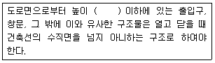
- 1.5m
- 3.0m
- 4.5m
- 6.0m
(정답률: 69%)
97. 허가대상 건축물이라 하더라도 미리 특별자치시장ㆍ특별자치도지사 또는 시장ㆍ군수ㆍ구청장에게 신고를 하면 건축허가를 받은 것으로 보는 경우에 속하지 않는 것은?
- 바닥면적의 합계가 85m2의 증축
- 바닥면적의 합계가 85m2의 재축
- 연면적의 합계가 100m2인 건축물의 건축
- 연면적이 300m2이고 3층인 건축물의 대수선
(정답률: 71%)
98. 다음과 같은 건축물의 높이는? (단, 건축면적 400m2, 옥탑의 수평투영면적 40m2이다.)
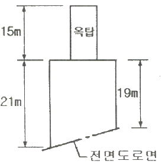
- 21m
- 23m
- 27m
- 36m
(정답률: 64%)
99. 기계식 주차장의 형태에 속하지 않는 것은?
- 지하식
- 지평식
- 건축물식
- 공작물식
(정답률: 74%)
100. 다음 중 건축법령상 주요구조부에 속하는 것은?
- 차양
- 지붕틀
- 작은 보
- 옥외 계단
(정답률: 69%)